컴퓨터활용능력-3급(폐지) (2003-05-04 기출문제)
1과목: 컴퓨터 일반
1. 다음 중 컴퓨터를 사용하는 방법에 대한 설명으로 가장 옳지 않는 것은?
- 컴퓨터 사용 도중에 프로그램이 다운되어 작동이 되지 않을 경우에는 콜드 부팅(Cold booting)을 하여 재부팅 하는 것이 좋다.
- 웜(Warm Booting) 부팅은 [Ctrl]+[Alt]+[Delete] 키를 동시에 눌러서 부팅하는 방법이다.
- 실행중인 프로그램을 모두 종료한 후 시스템 종료를 선택하여 컴퓨터를 끈다.
- 콜드 부팅(Cold booting)을 너무 자주 하면 컴퓨터에 이상이 올 수 있으므로 자주 사용하지 않도록 해야 한다.
(정답률: 46%)

2. 다음 설명에 적합한 장치의 인터페이스는?
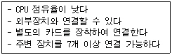
- IDE
- EIDE
- SCSI
- PCI
(정답률: 81%)
3. WWW(World Wide Web)에서 하이퍼 텍스트 문서를 기반으로 정보를 주고받기 위한 기본적인 규약은 무엇인가?
- WWW
- HTTP
- TCP/IP
- DNS
(정답률: 68%)
4. 다음 중 창 표시 단추와 기능이 바르게 연결된 것은?
- : 창을 최소화 시킨다.
- : 창을 복귀시킨다.
- : 창을 이중으로 연다.
- : 창을 최대화 한다.
(정답률: 87%)
5. 컴퓨터와 사람의 정보 처리 기능을 비교해 볼 때, 눈, 코, 귀, 피부의 기능에 해당되는 컴퓨터의 기능은 무엇인가?
- 입력기능
- 기억기능
- 통신기능
- 출력기능
(정답률: 78%)
6. 다음 중 컴퓨터의 처리속도 단위를 빠른 순서부터 나열한 것은?
- ms - μs - ns - ps
- ps - ns - μs - ms
- μs - ps - ms - ns
- ns - ms - ps - μs
(정답률: 75%)
7. 다음 중 시작 메뉴에 대한 설명으로 가장 옳지 않은 것은?
- [네트워크] 메뉴를 이용하여 인터넷을 사용할 수 있다.
- 단축키 [Ctrl]+[Esc]를 이용해 열 수 있다.
- [문서] 메뉴가 존재하여 최근에 열어본 문서를 볼 수 있다.
- [찾기] 메뉴를 이용하여 파일이나 컴퓨터를 찾아볼 수 있다.
(정답률: 69%)
8. 다음 중 한국에서의 기관 분류 도메인에 대한 설명으로 가장 옳지 않은 것은?
- go : 정부기관
- re : 연구기관
- po : 개인
- co : 기업체(회사)
(정답률: 69%)
9. 다음 중 윈도우즈의 보조프로그램중에서 미디(MIDI) 사운드, 동영상(AVI), 웨이브(WAV), 오디오 CD등의 멀티미디어 파일을 재생시킬 수 있는 프로그램은 무엇인가?
- 녹음기
- 매체재생기
- 그림판
- 워드패드
(정답률: 72%)
10. 다음 중 한글 Windows 98에서 디스크에 자료를 저장하는 기본 단위는?
- 비트
- 바이트
- 파일
- 프로그램
(정답률: 47%)
11. 다음 중 컴퓨터가 작동하는데 있어서 꼭 필요하지 않은 것은?
- 사운드 카드
- 중앙처리장치
- RAM
- 메인보드
(정답률: 81%)
12. 인터넷에서 인터넷에 연결되어 있는 친구와 화상통신을 하며 정보를 주고 받을 수 있게 해주는 통신 서비스는?
- 채팅(Chatting)
- 넷미팅(netmeeting)
- 이메일(e-mail)
- 게시판
(정답률: 79%)
13. 다음 중 컴퓨터의 출력 장치 중 프린터 인쇄 속도의 단위가 아닌 것은?
- CPS
- LPM
- PPM
- DPI
(정답률: 60%)
14. 다음 중 이름과 IP 주소를 매핑하여 주는 거대한 분산 네이밍 시스템으로 도메인 이름을 IP 주소로 바꾸어 주는 역할을 하는 서버는?
- IP 컨버터(Converter)
- 프록시 서버(Proxy Server)
- 인터넷 네이밍 시스템(Internet Naming System)
- DNS(Domain Name System)
(정답률: 86%)
15. 다음 중 마이크로 컴퓨터의 종류가 아닌 것은?
- 휴대용 마이크로 컴퓨터
- 데스크 탑 컴퓨터
- 노트북 컴퓨터
- 미니 컴퓨터
(정답률: 51%)
16. 다음 중 ADSL 서비스에 대한 설명으로 가장 올바르지 않은 것은?
- ADSL은 전화국과 각 가정이 1:1로 연결된다.
- 전화국에서 사용자까지 내려가는 하향이나 그 반대인 상향이나 모두 같은 속도로 통신한다.
- 최대 장점은 전화선이나 전화기를 그대로 사용하면서도 고속 데이터 통신이 가능하다는 점이다.
- 단점은 쌍방향 서비스로 이루어지는 원격진료나 원격 교육 같은 서비스에서는 효율이 떨어진다는 점이다.
(정답률: 64%)
17. 임의의 폴더내의 파일목록에서 복사나 이동을 위하여 연속적으로 위치하는 복수 개의 파일을 선택하려고 할 때 가장 효율적으로 사용되는 키는 ?
- [Alt]
- [Ctrl]
- [Shift]
- [Esc]
(정답률: 71%)
18. 한글 Windows 98에서 시스템 종료 메뉴에 해당되지 않는 것은?
- 시스템 대기
- 시스템 다시 시작
- 네트워크에서 시스템 다시 시작
- MS-DOS 모드에서 시스템 다시 시작
(정답률: 63%)
19. 한글 Windows 98에서 크기가 64KB를 초과하는 텍스트 파일을 편집하는데 쓸 수 있는 보조 프로그램은 아래 그림에서 어느 것인가?
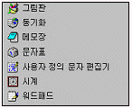
- 그림판
- 메모장
- 문자표
- 워드패드
(정답률: 68%)
20. 다음 중 파일을 다른 폴더에 복사하는 방법으로 가장 옳지 않은 것은?
- 파일을 선택한 후, [Shift]키를 누른 상태에서 복사할 폴더로 마우스를 드래그한다.
- 파일을 선택 후, 마우스 오른쪽 버튼을 누른 상태에서 복사할 폴더로 드래그한 후 나타나는 단축 메뉴에서 ‘여기에 복사’를 선택한다.
- 파일을 선택 후, 단축키 [Ctrl]+[C]를 누르고 복사할 폴더에서 [Ctrl]+[V]를 누른다.
- 파일을 선택 후, 단축메뉴에서 [복사]를 선택하고 복사할 폴더에서 단축메뉴의 [붙여넣기]를 선택한다.
(정답률: 75%)
2과목: 스프레드시트 일반
21. 차트마법사를 사용하여 차트를 작성하는 작업순서를 나열한 것으로 옳은 것은?
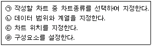
- (ㄱ)→(ㄴ)→(ㄷ)→(ㄹ)
- (ㄱ)→(ㄴ)→(ㄹ)→(ㄷ)
- (ㄱ)→(ㄷ)→(ㄴ)→(ㄹ)
- (ㄴ)→(ㄱ)→(ㄷ)→(ㄹ)
(정답률: 79%)
22. 다음 워크시트의 [B2]셀처럼 셀에 “##########” 으로 표시되는 현상에 대한 설명으로 올바른 것은?
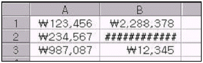
- 수식에서 값을 0으로 나누려고 할 때 발생한다.
- 잘못된 인수나 피연산자를 사용했을 때 발생한다.
- 입력된 값의 길이보다 셀폭이 좁을 때 발생한다.
- 함수나 수식에 사용할 수 없는 값을 지정했을 때 발생한다.
(정답률: 84%)
23. 아래 그림과 같이 [D2] 셀에 수식 ‘=SUM($A$1:$C$1)’을 입력하였을 때 나타나는 결과는?
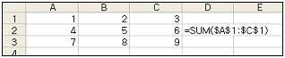
- 6
- 15
- SUM($A$1:$C$1)
- $A$1:$C$1
(정답률: 66%)
24. 다음 중 완성된 차트에 제목을 추가하려고 할 때 선택하는 단축메뉴는 어느 것인가?
- 항목서식
- 차트옵션
- 차트종류
- 차트영역
(정답률: 75%)
25. 다음 중 수식 “=(A2+B2)*C2-D2” 와 같은 결과 값을 갖는 수식은?
- =A2+B2*C2-D2
- =A2+B2*(C2-D2)
- =(A2+B2)*(C2-D2)
- =A2*C2+B2*C2-D2
(정답률: 36%)
26. 다음 중 [서식]-[열]-[선택한 열에 맞게]를 실행한 결과와 동일한 결과을 얻을 수 있는 것은?
- 선택한 열의 열 머리글 우측을 마우스 왼쪽 버튼으로 한번 클릭한다.
- 선택한 열의 열 머리글 우측을 마우스 왼쪽 버튼으로 더블 클릭한다.
- 선택한 열을 마우스 오른쪽 버튼으로 클릭하여 팝업 메뉴에서 선택한다.
- 마우스로는 열의 너비를 자동 조정할 수 없다.
(정답률: 61%)
27. 다음 중 작업중인 문서를 화면에서 숨기기 위한 기능이 위치하고 있는 주 메뉴는?
- 파일
- 편집
- 창
- 도구
(정답률: 60%)
28. 날짜 데이터 “2002-08-20”의 표시 형식을 날짜의 ‘97-3-4’로 설정했을 때 셀에는 표시되는 결과로 옳은 것은?
- 02-08-20
- 02-8-Tuesday
- 02-8-2
- 02-8-20
(정답률: 56%)
29. 다음 차트에서 설정되지 않은 옵션은 어느 것인가?
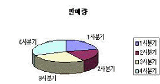
- 범례
- 차트제목
- 값 표시
- 레이블 표시
(정답률: 70%)
30. 다음 중 워크시트의 G3셀에 합계가 90점 이상이면 “A”, 80점 이상이면 “B”, 70점 이상이면 “C”, 70점 미만이면 “F”로 표시하려할 때의 계산식은?
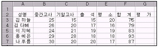
- =IF(F3>=90,“A”,IF(F3>=80,“B”,IF(F3>=70,“C”,“F”)))
- =IF(G3>=90,“A”,IF(G3>=80,“B”,IF(G3>=70,“C”,“F”)))
- =IF(F3>90,“A”,IF(F3>80,“B”,IF(F3>70,“C”,“F”)))
- =IF(G3>90,“A”,IF(G3>80,“B”,IF(G3>70, “C”,“F”)))
(정답률: 50%)
31. 다음 중 정렬 방법에 대한 설명으로 옳지 않은 것은?
- 정렬 기준에는 ‘오름차순’과 ‘내림차순’이 있으며 세 번째 기준까지 지정할 수 있다.
- [선택한 범위의 첫 행]에서 ‘머리글 행’을 선택하면, 머리글 행은 정렬에서 제외된다.
- 영어는 대소문자를 구별해서 정렬 할 수 있다.
- 정렬 방향은 ‘위쪽에서 아래쪽’과 ‘아래쪽에서 위쪽’이 있다.
(정답률: 41%)
32. 다음의 차트 도구모음에서 각 아이콘에 대한 이름이 잘못 짝지워진 것은?
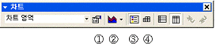
- 데이터 이름표
- 차트종류
- 범례
- 데이터 테이블
(정답률: 74%)
33. [C2] 셀에 ‘=ABS(A2-B2)’, [C3] 셀에 ‘=ABS(A3-B3)’라고 수식을 입력했을 때, 셀에 각각 표시되는 결과로 맞는 것은?
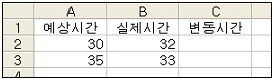
- -2, 2
- 2, 2
- 2, -2
- -1, -2
(정답률: 57%)
34. 다음 중 메모 작업에 대한 사용방법으로 틀린 것은?
- 메모상자에 메모를 입력한 다음 빠져나오려면 메모 상자 밖을 클릭한다.
- 메모상자에 메모내용을 추가하려면 단축메뉴에서 ‘메모편집’ 명령을 실행시킨다.
- 메모상자에 있는 메모내용만 삭제하려면 단축메뉴에서 ‘메모 삭제’ 명령을 실행시킨다.
- 메모상자를 항상 나타내게 하려면 단축메뉴에서 ‘메모 표시’명령을 실행시킨다.
(정답률: 49%)
35. 다음 중 인쇄 대화 상자에 대한 설명으로 옳지 않은 것은?
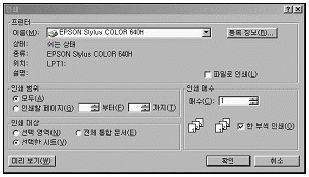
- 인쇄 범위에서 한 페이지만 인쇄 할 수 있도록 지정할 수 없다.
- 동일한 페이지를 여러 매 인쇄할 수 있다.
- 인쇄하기 전에 미리보기를 할 수 있다.
- 선택영역을 인쇄대상으로 설정하면 선택영역만 인쇄된다.
(정답률: 82%)
36. 다음의 표에서 A열과 1행을 틀 고정하기 위한 명령을 실행할 때의 셀 선택으로 알맞은 것은?
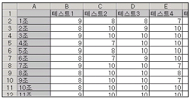
- [A1]
- [A1:B2]
- [B2]
- A열
(정답률: 50%)
37. 다음의 워크시트에서 [A1]셀에 대하여 채우기 핸들을 이용하여 [A2]셀에서 [A5]셀까지 드래그한 경우, [A4]셀에 입력되는 데이터는?
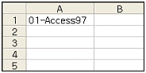
- 04-Access100
- 01-Access97
- 04-Access97
- 01-Access100
(정답률: 62%)
38. 다음 중 숫자 데이터의 입력 형태에 관한 설명으로 틀린 것은?
- 숫자를 괄호로 둘러 싸면 (예: (3))음수로 인식한다.
- 숫자 앞에 -기호를 입력하면 음수로 인식한다.
- 분수를 날짜로 입력할 수 없게 하려면 0 1/2와 같이 분수 앞에 0을 입력한다.
- 숫자에 2,324와 같이 콤마를 입력하면 안된다.
(정답률: 77%)
39. 수식을 복사할 때에 셀 주소를 고정시키기 위해서 셀 주소에 $를 입력하는 기능을 갖는 기능키는?
- [Shift]+[Enter]
- [F4]
- [F6]
- [F5]
(정답률: 62%)
40. 다음 중 조건부 서식에 대한 설명으로 옳지 않은 것은?
- 데이터가 변경되면 조건을 다시 검사하여 서식을 수동으로 변경해야 한다.
- 조건은 3개까지 지정할 수 있다
- 선택한 영역에 대해서 사용자가 지정한 조건을 만족하는 셀에만 특정 서식을 적용한다.
- 조건을 여러 개 지정할 경우, 먼저 지정된 조건이 우선되어 적용된다.
(정답률: 67%)
콜드 부팅은 컴퓨터를 완전히 종료한 후 다시 부팅하는 것을 말하며, 웜 부팅은 컴퓨터를 재부팅하는 것을 말합니다.
따라서, "컴퓨터 사용 도중에 프로그램이 다운되어 작동이 되지 않을 경우에는 콜드 부팅(Cold booting)을 하여 재부팅 하는 것이 좋다."는 옳은 설명입니다.